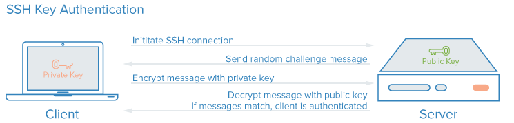

前言
使用Linux系统的朋友一定知道SSH（Secure Shell），Linux系统下默认的远程登陆服务。
我们每次使用SSH远程登陆到远端主机时，总是要输入密码，如果是服务器的话，密码一般都很复杂。实际上，SSH还可以使用密钥认证的方式远程登陆。
配置SSH密钥认证登陆
首先，我们需要确认远程主机的sshd服务开启了密钥认证功能。
查看ssh的配置文件，确认打开了相关选项。修改ssh配置文件要用到root权限。
ssh默认就是开启密钥认证功能的，但还是确认一下比较稳妥…
修改完配置选项后，重启sshd服务。
接下来，我们需要生成一对密钥，在客户端（client）使用ssh-keygen命令来完成。
该命令会提示3条语句，一般情况下，我们回车跳过即可（命令更多选项可以查看man文档）。
- 密钥对存放位置
- 输入控制密码
- 再输入（确认）控制密码
该命令生成了一对RSA密钥，放在用户家目录 ~/.ssh 下，文件名是id_rsa，id_rsa.pub。带.pub后缀的是公钥，不带后缀的是私钥。
然后，我们把公钥上传到服务端（server）远端主机上完成相关配置。
我们可以使用ssh-copy-id命令自动完成配置，也可以手动操作。
其实这一步就是将id_rsa.pub公钥写入到authorized_keys中。如果没有该文件，就手动创建一个。再将 authorized_keys 与 ~/.ssh权限设置正确。权限不对，认证会失败。
OK，配置完成！现在我们已经可以从客户端无密码登陆远程目标主机了。
工作原理
SSH免密码登陆是使用密钥加解密认证取代原先了的密码认证。

SSH密钥认证流程图
图片取自DigitalOcean
首先初始化连接，服务端发送一段随机字符串给客户端，客户端使用私钥加密后发回，客户端再使用公钥解密，如果解密后的内容可以正确配对，则认证通过，允许远程登陆。
关于加解密的过程，子恒喵没学过密码学，也不是很懂…但是，SSH远程登陆不用输密码啦，还是很方便哒！
参考资料
Debian官方教程：https://debian-administration.org/article/530/SSH_with_authentication_key_instead_of_password